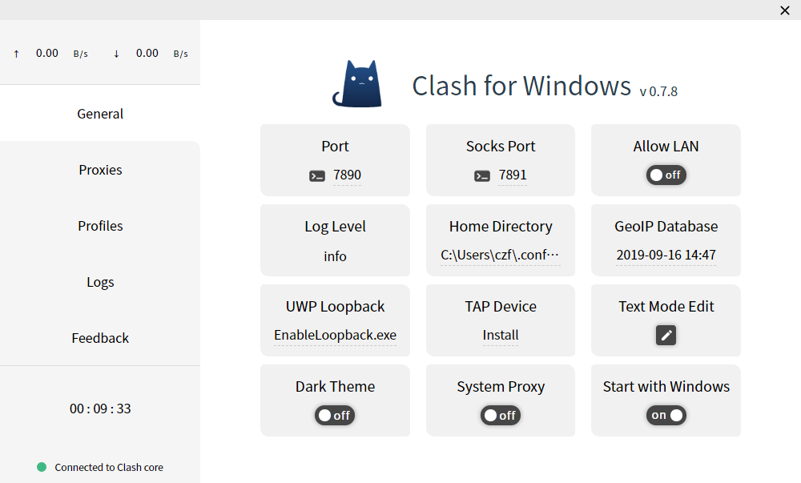

常规 General

在常规页面下可以清楚了解当前配置文件的设置，譬如常规的http和socks5代理端口等，方便对某些应用单独进行配置代理
选项说明
- Port：HTTP代理端口
- Socks Port：Socks5代理端口
- Allow LAN：是否允许局域网代理
- Log Level：Clash核心日志等级
- Home Directory：Clash配置文件目录（不建议修改此目录下文件内容）
- GeoIP Database：GeoIP数据库更新
- UWP Loopback：UWP应用联网限制解除工具
- TAP Device：虚拟网卡安装
- General YAML：文本模式编辑基础配置
- Theme：切换
亮/暗主题 - System Proxy：系统代理开关
- Start with Windows：开机自启动开关
点击行为
- Connected to Clash core：快速打开 logs 文件夹
- Clash for Windows（标题）：快速重启软件
- v x.x.x: 当显示
new提示时可以直接点击下载新版安装包 (每隔6小时检查一次更新) - Home Directory：快速打开配置文件目录
- GeoIP Database：点击更新 GeoIP 库
- UWP Loopback：快速打开回环代理限制器
- TAP Device：安装虚拟网卡驱动
悬停行为
- Allow LAN：显示当前所有网卡IPv4地址